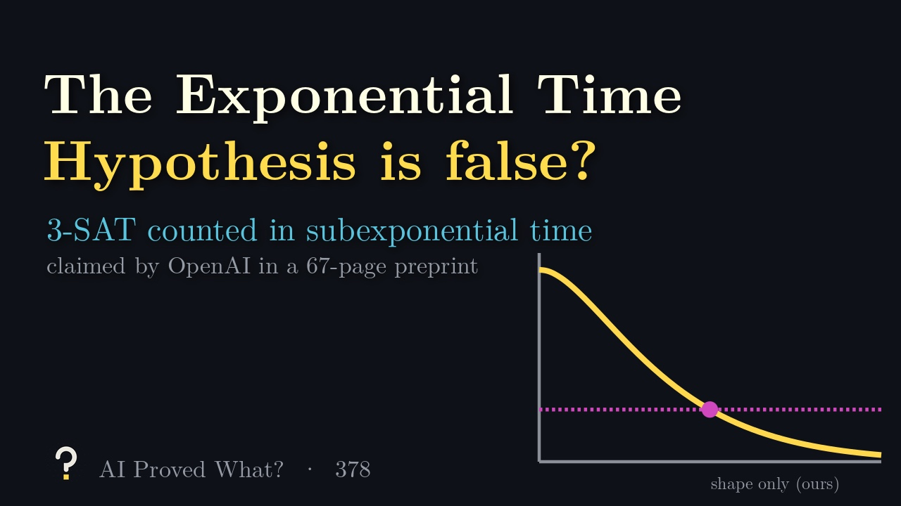
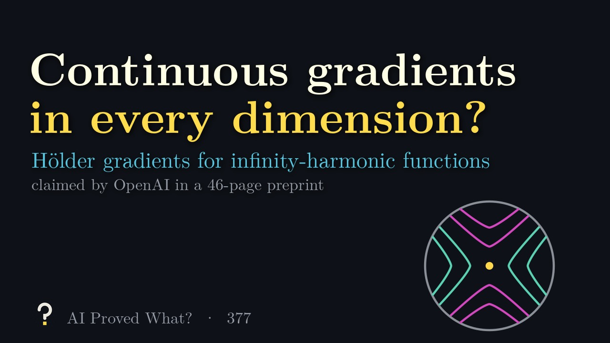
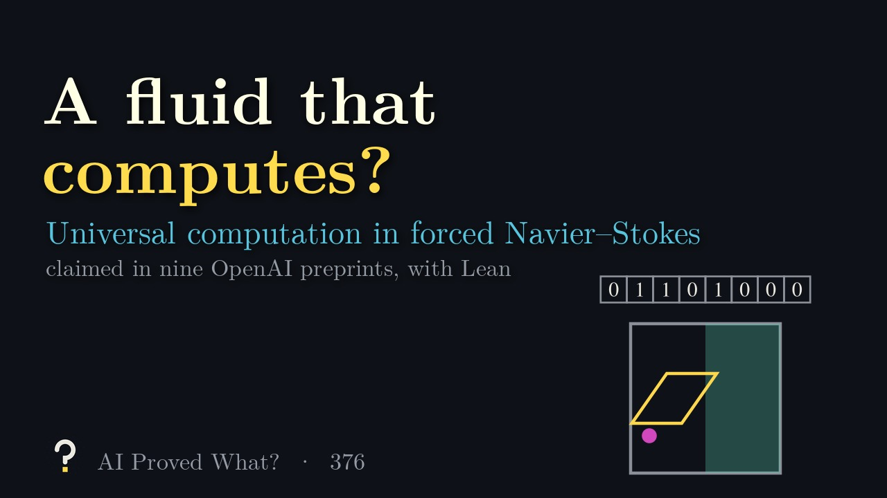
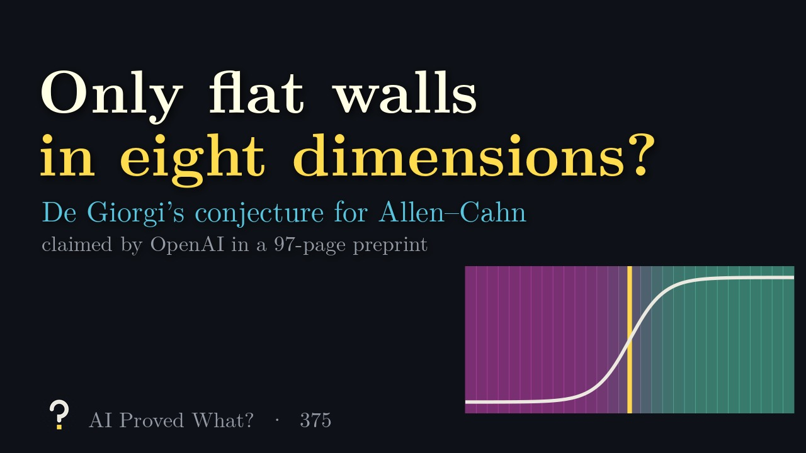
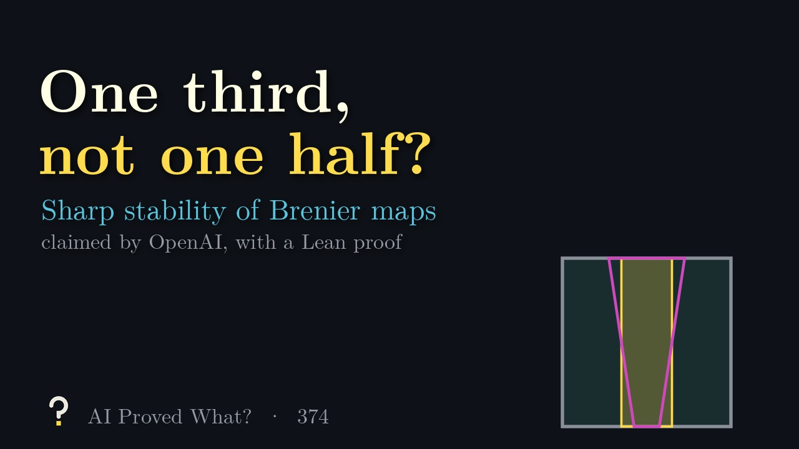
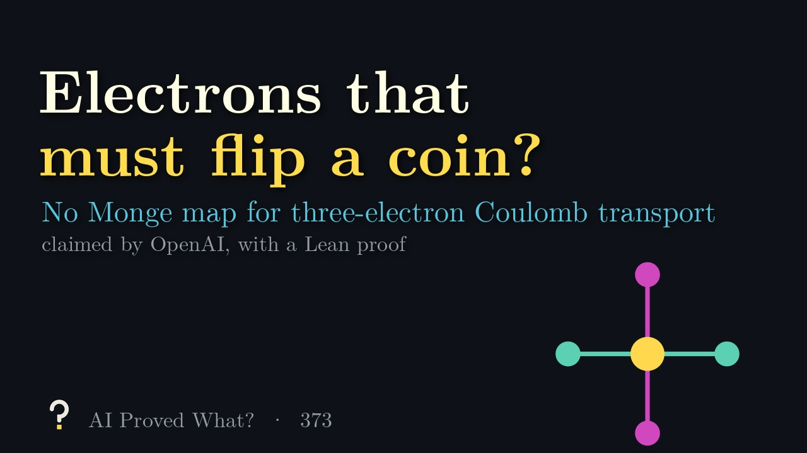

What’s new
- New episode for 379: N√(log N), not N log N? OpenAI’s matching bounds for Fourier transforms and multiplication on tapes (130, 109). Episode out
- Specials: GO01 (factoring in proven time L[1/3, 105]? Google’s Cogentic claim, and why 105 is no threat to RSA). Beyond OpenAI
- Specials: GO02 (factoring with no coin flips? Google Cogentic’s deterministic claim, unchecked; it does not cite an earlier Claude-generated claim). Anthropic makes Claude, which helps make this series. Beyond OpenAI
- Specials: GO03 (discrete logarithms below quasi-polynomial time? Google’s Cogentic claim, and its gigantic threshold). Beyond OpenAI
- Specials: GO04 (past the square-root barrier for log-rank? Google Cogentic’s claim, by 0.000005). Beyond OpenAI
An AI system claims a strongly polynomial algorithm for linear programming, answering Smale’s ninth problem, and polytopes whose diameter beats every polynomial in their facet count, disproving the polynomial Hirsch conjecture.
What does that even mean, and has anyone checked? Each episode takes one claim like this, builds the intuition with animation, and keeps a running record of how far the proof has been verified.

Episode 380: Strongly polynomial linear programming?, about 8 minutes.
Where this claim stands
- Posted as a preprint
- OpenAI, November 24, 2026
- Under expert review
- Not yet
- Peer reviewed
- Not yet
- Checked in Lean
- OpenAI published a Lean proof of part of the claim (scope notes)
Last checked November 25, 2026. The claims have not been withdrawn. Two preprints (58 and 57 pages). OpenAI published Lean proofs of rational linear programming in strongly polynomial time and of the polytope theorems (not the real-number case, quadratic programming or the games); we have not run the check, and no build log is published. Not yet peer reviewed.
Recent episodes
-
Episode 380 · 8:03
Strongly polynomial linear programming?
AI preprints claim strongly polynomial linear programming and a disproof of the polynomial Hirsch conjecture
-
 Episode 379 · 8:15
VP ≠ VNP and Valiant’s whole hierarchy?
AI preprints claim Valiant’s whole hierarchy and near-quasipolynomial bounds for the permanent
Episode 379 · 8:15
VP ≠ VNP and Valiant’s whole hierarchy?
AI preprints claim Valiant’s whole hierarchy and near-quasipolynomial bounds for the permanent
-

Episode 378 · 5:42 The Exponential Time Hypothesis is false? An AI preprint claims to count k-SAT solutions in subexponential time -

Episode 377 · 3:52 Continuous gradients in every dimension? An AI preprint claims interior C¹,α estimates for infinity-harmonic functions in three and more dimensions -

Episode 376 · 4:26 A fluid that computes? Nine AI preprints claim universal computation in forced Navier–Stokes flows on a fixed flat domain -

Episode 375 · 4:12 Only flat walls in eight dimensions? An AI preprint claims De Giorgi’s conjecture in dimension eight and the classification of stable solutions in seven -

Episode 374 · 3:40 One third, not one half? An AI preprint claims sharp one-third stability of Brenier maps, disproving Letrouit's square-root conjecture -

Episode 373 · 3:55 Electrons that must flip a coin? An AI preprint claims the three-marginal Coulomb transport problem need not have an optimal map
Browse by subject
- Number theory31 of 31 explained
- Algebraic and complex geometry36 of 36 explained
- Real and complex analysis16 of 16 explained
- Convex and metric geometry15 of 15 explained
- Theoretical computer science43 of 43 explained
- Dynamical systems and ergodic theory12 of 12 explained
- Combinatorics37 of 37 explained
- Algebra18 of 18 explained
- Probability and statistical mechanics29 of 29 explained
- Mathematical logic6 of 6 explained
- Group theory14 of 14 explained
- Mathematical physics25 of 25 explained
- Operator algebras19 of 19 explained
- Topology18 of 18 explained
- Functional analysis11 of 11 explained
- Differential geometry29 of 29 explained
- Partial differential equations16 of 16 explained
Progress
- Explained
- 375 of 375 results (730 papers in all)
- Under expert review
- 10 results: 9 reviewed by OSVerify (002, 041, 069, 074, 086, 167, 237, 306, 340); 1 announced as under review by a named group (378)
- Lean proof published by OpenAI
- 251 of 375 results: 182 of the main theorem, 69 of part of the claim; +1 by another lab (Axiom: 265)
- Peer reviewed
- 0 as of November 25, 2026
OpenAI’s 730 papers are grouped into 375 results. A result is one main claim plus any companion papers, such as alternative proofs, supporting results or consequences, and each episode explains one whole result, all of its papers included.
Beyond OpenAI’s catalogue
One-off announcements by OpenAI, and results from other labs. Same record, kept apart from the counts above.
How to read the record
Every claim gets the same four steps. A filled gold box means a step has happened; an empty box means it hasn’t yet.
- Posted as a preprint
- The proof is public
- Under expert review
- A named independent group has reviewed it, or is said to be checking it
- Peer reviewed
- Refereed by mathematicians
- Checked in Lean
- Verified step by step by computer
Posted as a preprint means the lab has released a written proof anyone can read. That’s where a claim starts, not where it ends. A claim announced before its paper is public reads Announced, paper not public instead. Under expert review is filled when a named independent group has published a review of the proof (so far OSVerify (a Stanford verification project) for OpenAI’s catalogue, and Kevin Buzzard’s outside check of AN01’s Lean code; a review is not a certification), shown as a blue box when a lab names a group that will review it (we quote who said so), and left empty otherwise. Peer reviewed means independent mathematicians have refereed it, usually for a journal. Checked in Lean means the main result has been verified by Lean, a computer program that accepts a proof only when every step is justified.
When a published Lean proof (OpenAI’s or another lab’s) covers only part of a claim, a half-filled box marks it, on episode pages and in lists, and the record says what is covered.
If a claim is withdrawn, its box turns red and the episode stays up, clearly marked. Mistakes are part of the story.